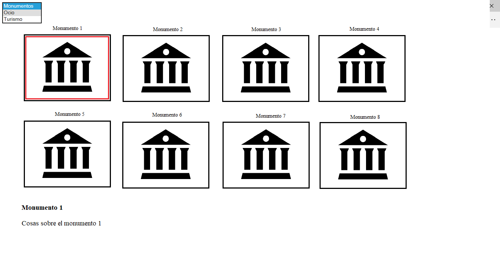

Requisitos de la aplicación:
Esta aplicación se enfocará en satisfacer las necesidades que pueda tener un turista, al llegar
a la ciudad de Madrid, en el que mediante la aplicación podrá interactuar y mostrar los diferentes puntos turísticos de interes
de la ciudad.
- Mapa con las diferentes localizaciones de museos, teatros, cines y monumentos de Madrid.
- El usuario podrá buscar las diferentes localizaciones turísticas seleccionando en un combo el tipo de localización turística.
- Se le mostrará al usuario un listado de los elementos ubicados en el mapa
